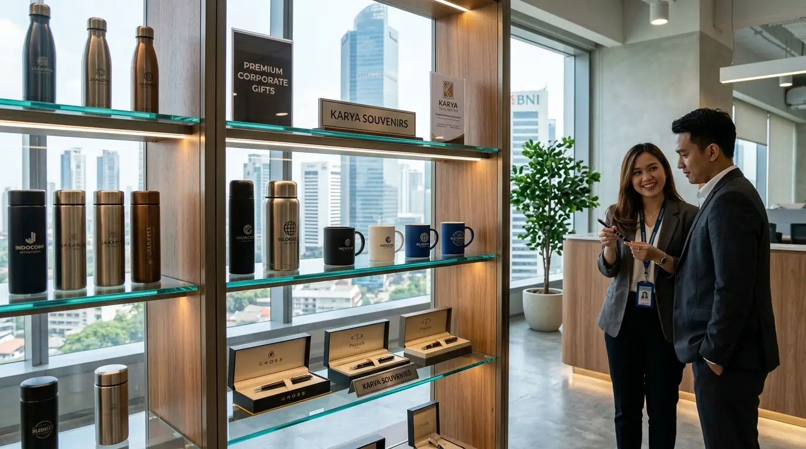

Tips Memilih Vendor Souvenir Kantor Terpercaya & Profesional
 Tim Redaksi Souvenir Kantor Jakarta
29 Agustus 2026
5 Menit Baca
Tim Redaksi Souvenir Kantor Jakarta
29 Agustus 2026
5 Menit Baca

Memilih vendor souvenir kantor yang tepat sangat krusial untuk menjaga reputasi brand dan kelancaran event perusahaan. Kriteria utama yang wajib diperhatikan meliputi: legalitas usaha resmi & alamat fisik jelas, portofolio klien & ulasan terverifikasi, penyediaan sampel cetak (mock-up/proofing), transparansi harga & spesifikasi bahan, ketepatan jadwal produksi, garansi cacat produk/ganti baru, serta kemudahan metode pembayaran corporate.
Dalam dunia korporasi, pengadaan souvenir kantor atau corporate gift bukan sekadar kegiatan membagikan hadiah gratis. Cenderamata seperti tumbler custom, paket welcome kit karyawan, gift set eksklusif, hingga merchandise seminar kit merupakan perpanjangan dari identitas dan citra merek perusahaan Anda.
Pentingnya Memilih Vendor Souvenir Kantor yang Tepat
Vendor yang kurang profesional dapat mengakibatkan hasil cetak logo yang buram, keterlambatan pengiriman saat event penting, hingga produk rusak yang dapat merusak impresi klien maupun karyawan. Oleh karena itu, memahami kriteria pemilihan vendor souvenir yang kompeten adalah modal utama bagi tim Procurement dan Human Resource.
Legalitas Resmi
PT/CV & Faktur PajakKualitas Terjamin
Bahan standar premiumTepat Waktu
Sesuai jadwal event7 Kriteria Utama Memilih Vendor Souvenir Terpercaya
1. Memiliki Legalitas Badan Usaha & Alamat Workshop Jelas
Vendor resmi berbadan hukum (PT atau CV) menjamin keamanan transaksi keuangan Anda. Selain itu, ketersediaan alamat kantor atau showroom fisik di pusat bisnis seperti Jakarta memudahkan Anda untuk berkunjung dan berkonsultasi secara langsung.
2. Penyediaan Sampel Cetak Fisik (Physical Sample Proofing)
Vendor profesional yang berpengalaman selalu menyediakan fasilitas pembuatan sampel fisik sebelum masuk ke tahap produksi massal. Langkah ini penting untuk memverifikasi akurasi warna logo (Pantone), kualitas bahan dasar, serta kerapian ukiran laser/sablon.
3. Transparansi Spesifikasi Bahan & Harga Grosir
Pastikan vendor menjelaskan spesifikasi material secara detail—misalnya penggunaan bahan Stainless Steel SUS 304 food-grade untuk tumbler, atau bahan kulit sintetis premium untuk notebook. Harga yang ditawarkan juga harus konsisten tanpa ada biaya tersembunyi.

Garansi Replacement
Penggantian unit baru untuk produk cacat atau bocor.
Sample Proofing
Verifikasi warna dan posisi logo sebelum cetak massal.
Dokumen Legal
Faktur Pajak resmi dan kuitansi legalitas.
4. Rekam Jejak Portofolio Klien Korporat & Testimoni
Periksa portofolio pekerjaan yang pernah diselesaikan oleh vendor tersebut. Vendor yang terbiasa menangani perusahaan instansi pemerintah, BUMN, maupun perusahaan swasta nasional pasti memiliki standar Quality Control (QC) yang lebih disiplin.
5. Ketepatan Waktu Production Lead Time
Acara perusahaan memiliki tenggat waktu (deadline) yang rigid. Vendor terbaik akan memberikan estimasi waktu pengerjaan yang realistis dan siap memberikan perjanjian kesepakatan keterlambatan kirim.
6. Jaminan Garansi Penggantian Produk Cacat
Risiko barang rusak atau baret saat proses pengiriman dapat terjadi. Pastikan vendor menyertakan klausul garansi penggantian unit baru apabila ditemukan cacat produksi atau kerusakan selama proses distribusi kargo.
7. Kemudahan Prosedur Invoicing & Metode Pembayaran
Sistem pembayaran yang fleksibel (seperti DP bertahap dan transaksi berbasis invoice/Faktur Pajak resmi) sangat membantu prosedur administrasi keuangan di perusahaan Anda.
Kesalahan Fatal Saat Memilih Supplier Merchandise
Pengadaan cenderamata dalam skala besar memerlukan pengawasan ketat agar tidak menimbulkan kerugian biaya maupun waktu:
Tergiur Murah
Risiko bahan tidak aman / cepat rusak
Tanpa Sample
Hasil cetak logo beda warna / miring
Order Mendadak
Waktu produksi tidak cukup untuk QC
Segera hindari seluruh risiko tersebut dengan mempercayakan pemesanan cenderamata instansi Anda kepada Souvenir Kantor Jakarta yang memberikan jaminan garansi penggantian unit baru dan ketepatan jadwal kirim.
Pertanyaan Umum Seputar Vendor Souvenir Kantor (FAQ)
Mencari Vendor Souvenir Kantor Terpercaya di Jakarta?
Konsultasikan kebutuhan souvenir kantor dan corporate gift perusahaan Anda dengan tim konsultan Souvenir Kantor Jakarta untuk mendapatkan penawaran harga grosir terbaik.
Konsultasi Vendor GratisKesimpulan & Rekomendasi
Memilih vendor souvenir kantor yang tepat adalah kunci keberhasilan program cenderamata dan promosi perusahaan Anda. Jangan hanya tergiur harga murah, tetapi utamakan aspek legalitas, garansi produk, serta komitmen waktu dari vendor. Hubungi tim konsultan kami di Souvenir Kantor Jakarta sekarang juga untuk mendapatkan katalog produk terbaru dan penawaran harga grosir terbaik.